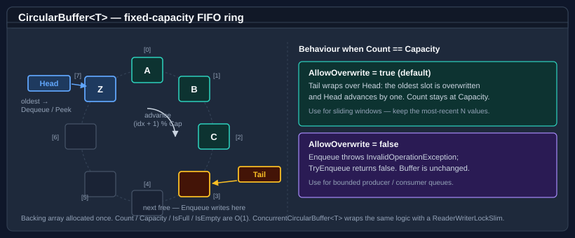

Circular buffer
CircularBuffer<T> is a fixed-capacity, first-in first-out (FIFO) ring buffer. It is allocation-free after construction: elements overwrite the oldest slot when the buffer is full (if overwrite is enabled), or throw / return false when the buffer is full and overwrite is disabled.
For concurrent access, use ConcurrentCircularBuffer<T> — a thread-safe variant that uses a lock-free multi-producer/multi-consumer (Vyukov) algorithm internally; it ships in the companion Bodu.Collections.Concurrent package.

The backing array is allocated once. Head marks the oldest entry (the next Dequeue / Peek target) and Tail marks the next free slot (the next Enqueue target). Both indices advance with (idx + 1) % Capacity, which is what makes the storage a ring rather than a shifting array. Because no element is ever shifted, Enqueue, Dequeue, and Peek are all O(1), and this[i] is an O(1) head-relative random read (index 0 is the oldest element).
CircularBuffer<T> derives from the shared RingBackedCollection<T> base — the same base that backs Deque<T> — and inherits Count, Capacity, IsEmpty, IsFull, the indexer, Clear, Contains, CopyTo, ToArray, and TrimExcess from it. The type accepts null for reference T and permits duplicate values.
Note
Enumeration is fail-fast. The buffer keeps an internal structural-version counter; an enumerator created with foreach captures that token and throws InvalidOperationException on the next MoveNext if the buffer is structurally mutated (including Clear and TrimExcess) while the enumerator is live. The enumerator is a struct, so a foreach loop allocates nothing. This is the single-threaded contract — ConcurrentCircularBuffer<T> is snapshot-based instead (see Pattern 5).
Pattern 1 — basic enqueue and dequeue
using Bodu.Collections.Generic;
var buffer = new CircularBuffer<int>(capacity: 4);
buffer.Enqueue(1);
buffer.Enqueue(2);
buffer.Enqueue(3);
int oldest = buffer.Dequeue(); // 1
int next = buffer.Peek(); // 2, non-destructive
Pattern 2 — bounded buffer that rejects excess
The capacity-only and default constructors set AllowOverwrite = true (sliding-window semantics — see Pattern 3). Pass allowOverwrite: false to flip the buffer into bounded mode, where Enqueue into a full buffer throws InvalidOperationException. Use TryEnqueue to avoid exceptions:
using Bodu.Collections.Generic;
var buffer = new CircularBuffer<string>(capacity: 3, allowOverwrite: false);
buffer.Enqueue("a");
buffer.Enqueue("b");
buffer.Enqueue("c");
bool added = buffer.TryEnqueue("d"); // false — buffer is full
Pattern 3 — ring buffer that overwrites the oldest entry
AllowOverwrite = true — the default on every constructor — implements a sliding window of the most-recent N values:
using Bodu.Collections.Generic;
// Keep only the 3 most recent readings.
var window = new CircularBuffer<double>(capacity: 3, allowOverwrite: true);
window.Enqueue(1.1);
window.Enqueue(2.2);
window.Enqueue(3.3);
window.Enqueue(4.4); // overwrites 1.1
double[] readings = window.ToArray(); // [2.2, 3.3, 4.4]
Pattern 4 — observing (or vetoing) evictions
When AllowOverwrite is true, two events fire as the oldest element is displaced, both typed Action<T>:
ItemEvicting— raised before the eviction. A handler that throws vetoes the eviction: the oldest element is not removed, the new element is not stored, and the exception propagates to theEnqueue/TryEnqueuecaller with the buffer's state unchanged. This is a deliberate back-pressure hatch.ItemEvicted— raised after the eviction, with the displaced element. Handler exceptions propagate to theEnqueuecaller.
using Bodu.Collections.Generic;
var window = new CircularBuffer<LogLine>(capacity: 1000, allowOverwrite: true);
window.ItemEvicted += line => _archive.Append(line); // flush before it is lost
window.ItemEvicting += line =>
{
if (line.IsCritical)
throw new InvalidOperationException("refusing to drop a critical line");
};
Important
The eviction-event contract differs between the two buffer types. CircularBuffer<T> propagates handler exceptions and lets ItemEvicting veto. ConcurrentCircularBuffer<T> exposes only ItemEvicted, swallows handler exceptions, and has no pre-eviction veto — its lock-free path cannot safely unwind. Do not port veto logic across the two types.
Note
Event handlers must not mutate the buffer. Mutating members (Enqueue, Dequeue, Clear, TrimExcess, …) are guarded against re-entry from inside an eviction handler and throw InvalidOperationException if called there. Keep handlers side-effect-only with respect to the buffer itself.
Pattern 5 — peek without removing
using Bodu.Collections.Generic;
var buffer = new CircularBuffer<int>(capacity: 5);
buffer.Enqueue(10);
buffer.Enqueue(20);
if (buffer.TryPeek(out int first))
Console.WriteLine(first); // 10 — not removed
Pattern 6 — concurrent access with ConcurrentCircularBuffer
ConcurrentCircularBuffer<T> provides the same Enqueue / Dequeue / Peek API but coordinates all operations with a lock-free multi-producer/multi-consumer (Vyukov) protocol built on per-slot sequence numbers. Use it when multiple threads read or write the buffer concurrently:
using Bodu.Collections.Generic.Concurrent;
var buffer = new ConcurrentCircularBuffer<string>(capacity: 100, allowOverwrite: true);
// Producer thread
Task.Run(() =>
{
for (int i = 0; i < 1000; i++)
buffer.Enqueue(i.ToString());
});
// Consumer thread
Task.Run(() =>
{
while (buffer.TryDequeue(out string? value))
Process(value!);
});
The concurrent type differs from the single-threaded one in several contractual ways — keep them in mind:
- Reference types only. Its type constraint is
where T : class?; value-type elements are not supported. The single-threadedCircularBuffer<T>has no constraint. - Minimum capacity 2. The Vyukov sequence protocol needs two distinct per-slot marks, so a capacity of 1 is rejected; the constructor throws
ArgumentOutOfRangeExceptionbelow 2. Countis approximate. Under concurrency the head and tail are read independently, soCountis a point-in-time estimate. For a coherent view of the contents, callToArray, which captures a true FIFO snapshot.- Snapshot enumeration.
foreach(andToArray) iterate a snapshot taken when the enumerator is created; the enumerator never throws on concurrent modification — there is no fail-fast token. It implements IProducerConsumerCollection<T>, so it can be wrapped byBlockingCollection<T>. SyncRootthrows. Matching the BCLConcurrentQueue<T>, the explicitICollection.SyncRootthrowsNotSupportedException— there is nothing meaningful to lock on.
Tip
For a strict single-producer / single-consumer pipeline, CircularBuffer<T> guarded by your own lightweight coordination can outperform the lock-free type, because the MPMC sequence dance has a per-operation constant cost that an uncontended single-writer path avoids.
API summary
| Member | Description |
|---|---|
Enqueue(T) |
Adds an element; throws if full and AllowOverwrite is false. |
TryEnqueue(T) |
Adds an element; returns false if full and AllowOverwrite is false. |
Dequeue() |
Removes and returns the oldest element; throws if empty. |
TryDequeue(out T) |
Removes and returns the oldest element; returns false if empty. |
Peek() |
Returns the oldest element without removing it; throws if empty. |
TryPeek(out T) |
Returns the oldest element without removing it; returns false if empty. |
Count |
The number of elements currently in the buffer. |
Capacity |
The maximum number of elements the buffer can hold. |
IsFull |
true when Count == Capacity. |
IsEmpty |
true when Count == 0. |
AllowOverwrite |
Whether adding to a full buffer overwrites the oldest entry. Settable at runtime. |
ItemEvicting / ItemEvicted |
Action<T> events raised before / after the oldest element is overwritten (single-threaded buffer only; ItemEvicting can veto). |
Clear() |
Removes all elements. |
Contains(T) |
true if the element is present (default equality comparer). |
CopyTo(T[], int) |
Copies the contents in head-to-tail order. |
TrimExcess() |
Shrinks the backing array to Count (minimum 1). |
this[int] |
Read-only head-relative indexer; index 0 is the oldest element. |
ToArray() |
Returns a snapshot in insertion order. |
Construction
Both buffers can be seeded from an existing sequence. When the source is longer than the capacity, the most recent capacity elements are retained (the older ones are dropped before the buffer is even built) — unless overwrite is disabled, in which case an over-long seed throws InvalidOperationException:
using Bodu.Collections.Generic;
// Seed from a sequence; keep only the last 3 if the source is longer.
var seeded = new CircularBuffer<int>(new[] { 1, 2, 3, 4, 5 }, capacity: 3);
// seeded holds [3, 4, 5]
// Default capacity is 16; default allowOverwrite is true on every overload.
var defaulted = new CircularBuffer<int>(); // capacity 16, overwrite on
Where to go next
- Deque — double-ended queue with the same fixed-vs-growable choice on both ends.
- Evicting dictionary — a fixed-capacity key-value cache with LRU / LFU / FIFO eviction.
- WeekPattern — immutable bitmask value type for sets of days of the week.
- Bodu.Collections guide index — all key types at a glance.
- Bodu.Collections.Generic API reference — full namespace overview.
- Core Foundations guides — every guide in this topic.